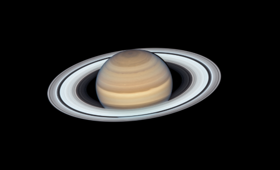

Earth
Our home planet, the only one known to support life.

Saturn
Famous for its beautiful rings made of ice and rock.
Uranus
An ice giant with a unique sideways rotation.
Sun
The star at the center of our solar system.

Mercury
The smallest planet and closest to the Sun.
Venus
The hottest planet, known for its thick, toxic atmosphere.
Mars
The red planet, a focus of exploration for future missions.
Jupiter
The largest planet, famous for its Great Red Spot.
Neptune
A deep blue planet with supersonic winds.
Moon
Earth’s only natural satellite, influencing our tides.